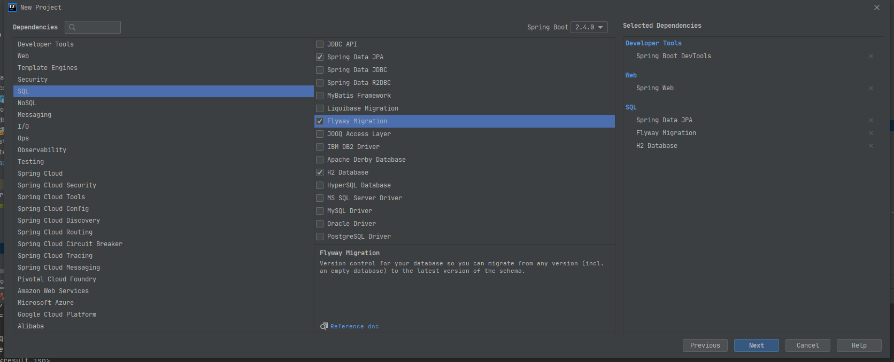

前言
在日常项目开发中，代码可以使用GIT/SVN 来进行版本控制，而数据库的更新却需要人工进行干预。
之前我在项目开发时会根据项目版本手工创建好每次版本迭代会更新的sql文件，发布版本时先在线上执行下对应sql，然后再更新应用版本。在研究自动构建时就想有没有一种技术/框架可以将这种手工行为变为自动。
偶然的机会在网上搜索到flyway-一个能对数据库变更做版本控制的工具，通过在项目中集成就可以在每次版本更新时自动执行对应版本sql了
Flyway具有以下优点：
- 简单 非常容易安装和学习，同时迁移的方式也很容易被开发者接受。
- 专一 Flyway 专注于搞数据库迁移、版本控制而并没有其它副作用。
- 强大 专为持续交付而设计。让Flyway在应用程序启动时迁移数据库。
集成
某个环境使用了 flyway 控制版本之后，就不要再手动增删改表了
新项目
如果是新的项目，直接通过Idea选择Spring Initializr创建SpringBoot项目并勾选[Flyway Migration]即可：

可以发现scr/resources下多了db/migration文件夹，这个文件夹就是提供flyway使用的
- 首先先配置好数据库相关配置，这里为了演示方便使用了H2(实际项目更多使用的是MySQL)
1 | spring: |
数据库相关配置这边就不多解释了
- 接着需要在application.yml中对flyway进行一些配置：
1 | spring: |
- 编写SQL初始化脚本
在db/migration文件夹下新建V1.0.1__init.sql文件(必须以Vxx__开头，后面根据自己的规则编写即可)：
1 | # 示例 |
- 启动项目
可以发现数据库中多了users表和一些数据，同时多了一个flyway数据库里有一个flyway_schema_history_demo表(这些都是在application.yml中配置的)，而这个表就是flyway用来控制sql版本的。
- 后续更新
后续只要根据SQL规则编写新的SQL即可达到每次部署Spring Boot项目时自动更新相应sql了。(需注意flyway社区版目前没有回滚机制，故每次更新时有条件的还是备份下原有数据库，防止意外情况)
测试环境存在经常手动修改表增加表的情况的话，建议关闭flyway，因为在手动执行SQL执行之后再执行flyway中的SQL会导致执行失败的情况，当开发稳定后再将需要的SQL语句填入到flyway指定的sql中
SQL文件编写规则
db/migration文件夹的SQL语句命名需要遵从一定的规范，否则运行的时候flyway会报错。命名规则主要有两种：
用于版本升级, 每个版本有唯一的版本号并只能执行一次。以大写的”V”开头，后面跟上”0~9”数字的组合,数字之间可以用“.”或者下划线”_”分割开，然后再以两个下划线分割，其后跟文件名称，最后以.sql结尾。比如，V2.1.5__create_user_ddl.sql、V4.1_2__add_user_dml.sql。
可重复运行的SQL，以大写的“R”开头，后面再以两个下划线分割，其后跟文件名称，最后以.sql结尾。比如，R__truncate_user_dml.sql。Flyway检测到该类型SQL 脚本的 checksum 有变动, Flyway 就会重新应用该脚本. 它并不用于版本更新
V开头的SQL执行优先级要比R开头的SQL优先级高。
另外还有一种：以Ux__开头的SQL，Undo用于撤销具有相同版本的版本化迁移带来的影响。但是该回滚过于粗暴，一般不推荐使用(另外这也是收费版本才支持的)
Flyway 采用左对齐原则比较两个SQL文件的先后顺序, 缺位用 0 代替：
- 1.0.1.1 比 1.0.1 版本高
- 1.0.10 比 1.0.9.4 版本高
- 1.0.10 和 1.0.010 版本号一样高, 每个版本号部分的前导 0 会被忽略
除了直接在db/migration文件夹中创建sql外，还可以使用自定义的文件夹来对版本进行分类(如db/migration/1.0.0/V1__create_users_by_jonesun.sql)，不会影响flyway对SQL的识别和运行
已有项目集成
已有项目(Spring Boot项目)想要使用Flyway的话：
- pom.xml加入flyway引用:
1 | <dependency> |
- scr/resources下新建db/migration文件夹(注意是先新建db文件夹再新建migration文件夹)
- 同上面的新项目一样在application.yml中对flyway进行配置
- 在db/migration文件夹中增加一个名为 V1.0.0__init.sql的文件，内容为空，用于占位
- 在db/migration文件夹中按照规则新建Vxxx__xxx.sql即可
一个好的习惯：先 dump 一份所有环境中当前项目最新版本的表结构，在 resources/db目录中创建一个 base_init.sql 文件，将最新版本的 DDL 以及需要初始化的数据放到这个文件中，这个 sql 文件后期就不要做任何修改
如果需要部署到新的环境，则只需要执行base_init.sql即可，其他版本的交给 flyway 就可以了
注意事项
因为flyway针对Vxx__.sql在项目启动后只会执行一次，故开发环境下要不先关闭flyway, 要不sql编写后启动过项目后就不要再变化了，不然会报异常Validate failed，当然如果出现此类异常需要到flyway_schema_history_demo(表名随自己项目的配置)删除对应记录:
1 | DELETE IGNORE FROM flyway_schema_history_demo WHERE success = 0; |
其他
flyway也提供了maven插件便于开发调试使用，有兴趣可以了解下:
1 | <plugin> |
与flyway类似的还有Liquibase。对应的flyway和Liquibase都有收费版提供更强大的功能。